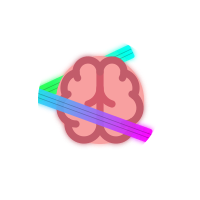

A file-based task tracker powered by Typst.
Let your tasks live near other stuff in .typ files.
#import "@local/mindtape:0.1.0": *
= Sprint 14
- [ ] Design REST API schema #due(2026, 3, 15) #high #tag("backend") #id("32dlnANSCyKbNd5VmVkuD")
- [ ] Draft OpenAPI spec #medium #tag("backend") #id("32dlnAh8xsvUEEChHINIC")
- [ ] Review with frontend team #low #tag("team") #id("32dlnB0dWhNVWaGksmfSl")
- [ ] Set up CI pipeline #due(2026, 3, 10) #medium #tag("devops") #id("32dlnBKEMaei7CBTC4FBe")
- [x] Write integration tests #tag("testing") #id("32dlnBdX2sjaNOTf18oDS")
- [ ] Review pull requests #low #tag("team") #id("32dlnBwdncY9gNmZ1lJ7L")#import "@local/mindtape:0.1.0": *
= UI Polish
- [ ] Migrate to new design system #high #tag("frontend") #due(2026, 3, 18) #id("32dlnCFk7dmBbvNWCkkju")
- [ ] Audit existing components #medium #tag("frontend") #id("32dlnCYkkeAMr9u1KlERx")
- [x] Create migration checklist #tag("frontend") #id("32dlnCrlM4b1mDHy0RWQv")
- [ ] Fix dark mode contrast issues #medium #tag("a11y") #id("32dlnDBABkfS3bEDeJ0MD")
- [x] Add loading skeletons #tag("ux") #id("32dlnDUkfEBpOl7sN9Iec")
- [ ] Update component library #due(2026, 3, 20) #medium #tag("frontend") #id("32dlnDoRTcl7LNcUjI4xF")#import "@local/mindtape:0.1.0": *
= Deployment
- [ ] Configure staging environment #high #tag("infra") #due(2026, 3, 12) #id("32dlnE82PNeCsse3xvVFp")
- [ ] Write Terraform modules #medium #tag("iac") #id("32dlnERLEzayadH9WMsL1")
- [ ] Set up monitoring dashboards #low #tag("observability") #id("32dlnEkpjm8H9cwp9WaXc")
- [x] Automate backup rotation #tag("ops") #id("32dlous4FQvFeZhp6iLz2")#import "@local/mindtape:0.1.0": *
= Kubernetes
- [ ] Define pod resource limits #high #tag("k8s") #due(2026, 3, 14) #id("32dlouYH5O59sFghLRhs3")
- [ ] Set up horizontal autoscaling #medium #tag("k8s") #id("32dlouEyaz0ZLor8MonAc")
- [x] Create namespace layout #tag("k8s") #id("32dlotvZrXkY1ZRuY3vHU")== api-gateway
=== ~/projects/api-gateway/tasks.typ
- [ ] Design REST API schema #due(2026, 3, 15) #high #tag("backend") #id("32dlnANSCyKbNd5VmVkuD")
- [ ] Draft OpenAPI spec #medium #tag("backend") #id("32dlnAh8xsvUEEChHINIC")
- [ ] Review with frontend team #low #tag("team") #id("32dlnB0dWhNVWaGksmfSl")
- [ ] Set up CI pipeline #due(2026, 3, 10) #medium #tag("devops") #id("32dlnBKEMaei7CBTC4FBe")
- [ ] Review pull requests #low #tag("team") #id("32dlnBwdncY9gNmZ1lJ7L")
=== ~/projects/frontend-app/TODO.typ
- [ ] Migrate to new design system #high #tag("frontend") #due(2026, 3, 18) #id("32dlnCFk7dmBbvNWCkkju")
- [ ] Audit existing components #medium #tag("frontend") #id("32dlnCYkkeAMr9u1KlERx")
- [ ] Fix dark mode contrast issues #medium #tag("a11y") #id("32dlnDBABkfS3bEDeJ0MD")
- [ ] Update component library #due(2026, 3, 20) #medium #tag("frontend") #id("32dlnDoRTcl7LNcUjI4xF")
=== ~/projects/infra/deploy.typ
- [ ] Configure staging environment #high #tag("infra") #due(2026, 3, 12) #id("32dlnE82PNeCsse3xvVFp")
- [ ] Write Terraform modules #medium #tag("iac") #id("32dlnERLEzayadH9WMsL1")
- [ ] Set up monitoring dashboards #low #tag("observability") #id("32dlnEkpjm8H9cwp9WaXc")
=== ~/projects/infra/k8s.typ
- [ ] Define pod resource limits #high #tag("k8s") #due(2026, 3, 14) #id("32dlouYH5O59sFghLRhs3")
- [ ] Set up horizontal autoscaling #medium #tag("k8s") #id("32dlouEyaz0ZLor8MonAc").typ filesDefine tasks right where your project lives. Use tags, due dates, priorities — all in plain Typst.
A background watcher evaluates your files and indexes everything into a fast SQLite database.
Filter by tag, date, rank. Output as table, JSON, CSV, or Typst. Check off tasks from the terminal.
Typed variables, static checking, no ambiguity. Your task data is validated at the source — not after the fact.
Files import each other with #import.
Reuse task templates, share definitions, build on existing work.
Plain text files you can read, diff, and version-control. No lock-in, no binary blobs, no cloud dependency.
Filter by tags, due dates, start dates, rank, full-text search, file, or folder.
Output tasks as a table, JSON, CSV, or valid Typst markup.
Modify tasks in-place. Formatting, comments, and indentation are preserved. Conflict detection included.
Declarative setup as a systemd service with a Nix flake.
# flake.nix inputs:
mindtape.url = "github:mlavrinenko/mindtape";
mindtape.inputs.nixpkgs.follows = "nixpkgs";
# NixOS configuration:
imports = [ mindtape.nixosModules.default ];
services.mindtape = {
enable = true;
user = "youruser";
group = "users";
watchPaths = [
{ path = "/home/youruser/projects"; }
];
};git clone https://github.com/mlavrinenko/mindtape.git
cd mindtape
cargo build --release
# Install the Typst library
just install-lib